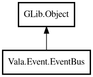

EventBus
Object Hierarchy:

Description:
public class EventBus : Object
In-process publish/subscribe event bus.
Content:
Creation methods:
Methods:
- public void clear ()
Clears all subscriptions.
- public bool hasSubscribers (string topic)
Returns whether topic has at least one subscriber.
- public void publish (string topic, Variant eventData)
Publishes event to topic.
- public EventBus subscribe (string topic, owned EventHandler handler)
Subscribes topic with handler.
- public EventBus subscribeOnce (string topic, owned EventHandler handler)
Subscribes topic with one-shot handler.
- public void unsubscribe (string topic)
Unsubscribes all handlers from topic.
- public EventBus withAsync ()
Enables asynchronous dispatch mode.
Inherited Members:
All known members inherited from class GLib.Object
- @get
- @new
- @ref
- @set
- add_toggle_ref
- add_weak_pointer
- bind_property
- connect
- constructed
- disconnect
- dispose
- dup_data
- dup_qdata
- force_floating
- freeze_notify
- get_class
- get_data
- get_property
- get_qdata
- get_type
- getv
- interface_find_property
- interface_install_property
- interface_list_properties
- is_floating
- new_valist
- new_with_properties
- newv
- notify
- notify_property
- ref_count
- ref_sink
- remove_toggle_ref
- remove_weak_pointer
- replace_data
- replace_qdata
- set_data
- set_data_full
- set_property
- set_qdata
- set_qdata_full
- set_valist
- setv
- steal_data
- steal_qdata
- thaw_notify
- unref
- watch_closure
- weak_ref
- weak_unref